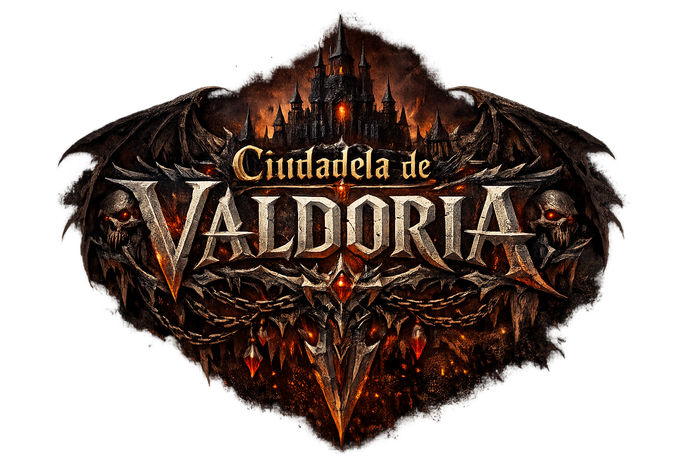

Un MMORPG 3D de vista cenital y fantasía oscura. Crea tu héroe, aparece en la plaza de la Ciudadela amurallada y adéntrate en un mundo persistente de llanuras, bosques, criptas y ciénagas repleto de criaturas, misiones y otros jugadores. Cuentas y personajes guardados en el servidor: entra desde cualquier equipo y continúa donde lo dejaste.
Jugar ahoraPlaza amurallada con posada, forja, mercado y capilla. Zona segura: las criaturas no entran y aquí no hay JcJ. Tu refugio entre expedición y expedición.
Llanuras, bosque denso, ruinas de un templo, el Lago de los Ciervos y la Ciénaga de los Ahogados. Lobos, jabalíes, osos, no-muertos y jefes como el Alfa Sombrío o el Rey del Fango.
Mazmorras subterráneas de luz espectral con ratas, esqueletos guardianes y el temible Señor de la Cripta. Mejor en grupo. Además, criptas menores repartidas por el mundo.
Combina raza y especialización: cada mezcla tiene su aspecto, su color de túnica y su forma de jugar.
Sube hasta nivel 15, reparte puntos en dos ramas de talentos por clase y desbloquea habilidades definitivas. Puedes reasignar tu build cuando quieras.
Barra de habilidades estilo Diablo/WoW con enfriamientos y coste de recurso: Furia que se acumula luchando, Vigor que fluye o Maná que hay que dosificar. Todo validado por el servidor.
El arma es tu fuente de poder y la armadura mitiga por porcentaje: siempre reduce algo, nunca te hace invulnerable. Progresar tu equipo es progresar de verdad.
Al caer pierdes experiencia y arrastras un "Alma Debilitada" que reduce tu daño durante 90 s, incluso si te desconectas. Una sacerdotisa puede purgarla... por oro.
Uníos para compartir botín y abatir a los jefes más duros.
Funda tu clan, invita miembros, ponle lema y usa el chat de gremio entre reinos.
Actívalo si quieres pelea entre jugadores. Nunca dentro de la Ciudadela, y sin perder objetos.
Intercambios cara a cara con confirmación por ambas partes y ejecución atómica en el servidor.
Vende aunque estés desconectado y recoge tus ganancias al volver.
Corceles, lobos huargo y piedras rúnicas para cruzar el mundo en un instante.
Pesca en el lago y cocina en las hogueras platos que curan mucho más.
Valdoria y Penumbra, cada uno con sus criaturas y su comunidad. Hasta 5 personajes por cuenta.
Crea tu cuenta, forja tu héroe y aparece en la plaza de Valdoria. Gratis y directo en el navegador, con tu progreso guardado en el servidor.
Jugar ahoraLa primera carga puede tardar hasta un minuto mientras el servidor despierta. Se juega mejor en ordenador.